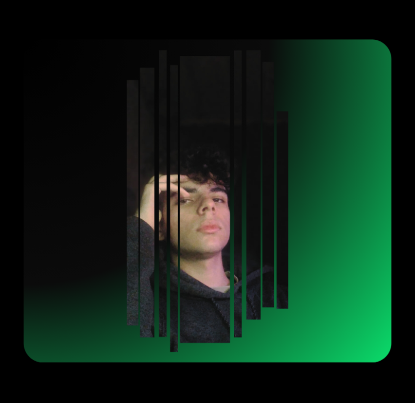

Sobre mim
Desde pequeno eu sou fascinado por tecnologia,especialmente por cybersegurança(na época eu chamava de "ser hacker"),Durante o fundamental tive pouco conteúdo pra consumir sobre tecnologia além de livros de uma biblioteca de bairro e os filmes.No meu penúltimo ano do fundamental,fiz curso de photoshop e Acabei me decepcionando,pois esperava muito mais,porém me permitiu ter acesso aos computadores e adquirir experiência prática.
No inicío do Ensino médio eu comecei integrado ao Magistério,dar aulas de história tinha virado meu objetivo,mas no meio do ensino médio e da pandemia,eu desisti,então concluí o ensino médio convencional,fiz ENEM assim que acabei o ensino médio e consegui através do ProUni uma bolsa de 100%,assim garanti o primeiro e segundo lugar em duas faculdades diferentes para A.D.S(Análise e Desenvolvimento de Sistemas),essa conquista fez eu me encontrar profissionalmente e retornar meu interesse e em tecnologia e cybersegurança.
